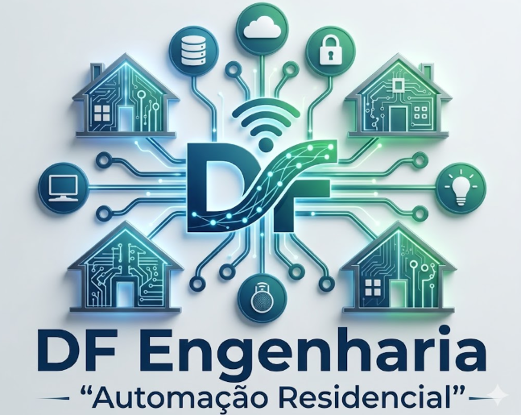

Soluções tecnológicas customizadas para transformar o seu ambiente. Atuamos no desenvolvimento de hardware, automação residencial e industrial.
Nosso sistema de 20 canais foi desenvolvido com tecnologia ESP32, garantindo alta performance e estabilidade. Projetado para quem busca controle total, o sistema permite o acionamento via aplicativo próprio, oferecendo flexibilidade para diversos perfis de uso.
Especialista em operações de turbo-geradores e estudante de Engenharia Elétrica, unindo a prática operacional à inovação em automação para entregar sistemas seguros e modernos.